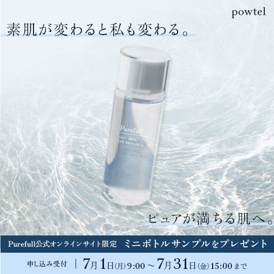

OverView
-
 作成時サイズ1080×1080
【仮想バナー】
新しく基礎化粧品が発表されるため、PR用のバナーです。
-
TOOL : PhotoShop
-
DATE : 約2日
-
目的
・商品の認知度を上げ、商品を知ってもらうため
・新商品をお試しいただき、商品の購入につなげるため
Point
Point1 ピュアなイメージを青系統の色で統一し、軽やかで爽やかに。文字下に直線を入れることにより、文字を見てもらえるようにしました。
Point2 ”満ちる”イメージを背景の波面で表現し、ピュアのイメージから波が透けるような加工をしました。